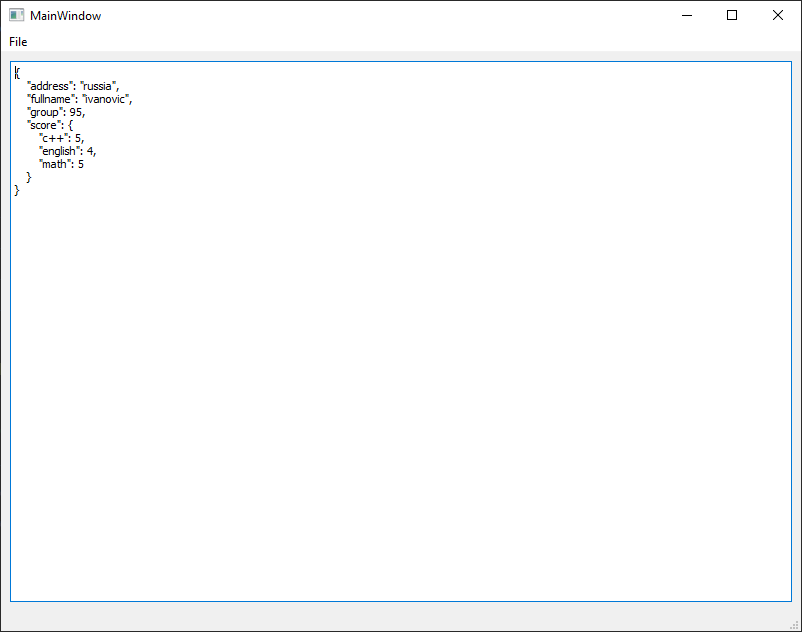

Thường thì lập trình viên cần hiển thị cho người dùng một số văn bản trên biểu mẫu. Cách dễ nhất để hoàn thành tác vụ này là sử dụng tiện ích QLabel và phương thức setText của nó.
ui->label->setText("Hello, world!");
Tiện ích QLabel trong Qt là một công cụ trực quan hóa mạnh mẽ. Nó cho phép bạn hiển thị không chỉ văn bản mà còn hiển thị hình ảnh (phương pháp setPixmap)
ui->label->setPixmap(QPixmap("C:/Users/Public/Pictures/Sample/ Pictures/dog.jpg"));
Ngoài ra, QLabel hỗ trợ một tập hợp con của ngôn ngữ HTML và cho phép bạn sử dụng các thẻ để định dạng văn bản.
ui->label->setText("<b>Hello</b>, <i>world!</i>");
Một thành phần khác cho phép bạn hiển thị dữ liệu văn bản là tiện ích QPlainTextEdit.
Nó cho phép bạn hiển thị văn bản thuần túy mà không cần định dạng. Văn bản có thể được đặt bằng phương thức setPlainText
ui->plainTextEdit->setPlainText("Hello, wolrd!");
Nếu bạn cần chỉ định nhiều dòng trong văn bản:
ui -> trơnTextEdit -> setPlainText ("Xin chào,wolrd! \nBạn có thể đặt văn bản nhiều dòng." );
Bạn có thể thêm các dòng vào văn bản hiện có:
ui->plainTextEdit->appendPlainText("Thêm dòng");
Điều quan trọng là phải hiểu rằng QPlainTextEdit chủ yếu hướng đến tương tác người dùng tương tác. Thành phần này cung cấp cho người dùng một giao diện để nhập và chỉnh sửa văn bản nhiều dòng.
Một lớp tương tự, QTextEdit, cho phép người dùng chỉnh sửa văn bản với định dạng nâng cao, sử dụng đánh dấu một phần của văn bản, các phông chữ khác nhau cho các phần khác nhau của văn bản, v.v.
